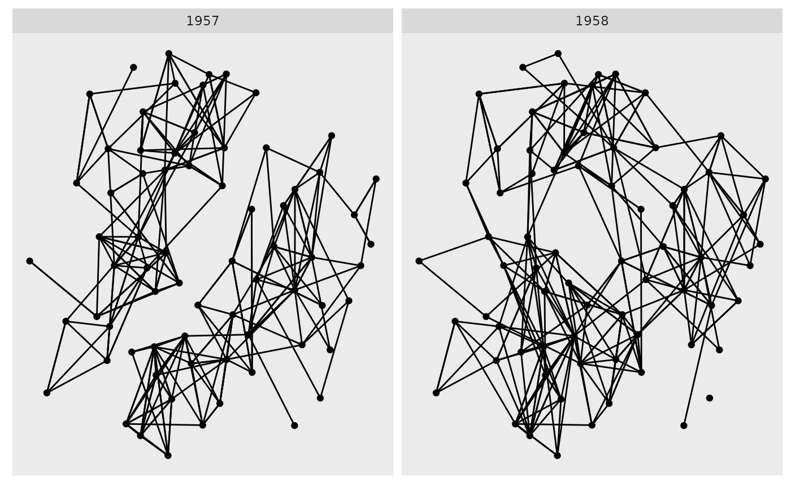

This function is equivalent to ggplot2::facet_wrap() but only
facets edges. Nodes are repeated in every panel.
facet_edges( facets, nrow = NULL, ncol = NULL, scales = "fixed", shrink = TRUE, labeller = "label_value", as.table = TRUE, switch = NULL, drop = TRUE, dir = "h", strip.position = "top" )
| facets | A set of variables or expressions quoted by For compatibility with the classic interface, can also be a
formula or character vector. Use either a one sided formula, |
|---|---|
| nrow | Number of rows and columns. |
| ncol | Number of rows and columns. |
| scales | Should scales be fixed ( |
| shrink | If |
| labeller | A function that takes one data frame of labels and
returns a list or data frame of character vectors. Each input
column corresponds to one factor. Thus there will be more than
one with formulae of the type |
| as.table | If |
| switch | By default, the labels are displayed on the top and
right of the plot. If |
| drop | If |
| dir | Direction: either |
| strip.position | By default, the labels are displayed on the top of
the plot. Using |
Other ggraph-facets:
facet_graph(),
facet_nodes()
gr <- tidygraph::as_tbl_graph(highschool) ggraph(gr) + geom_edge_link() + geom_node_point() + facet_edges(~year)#>